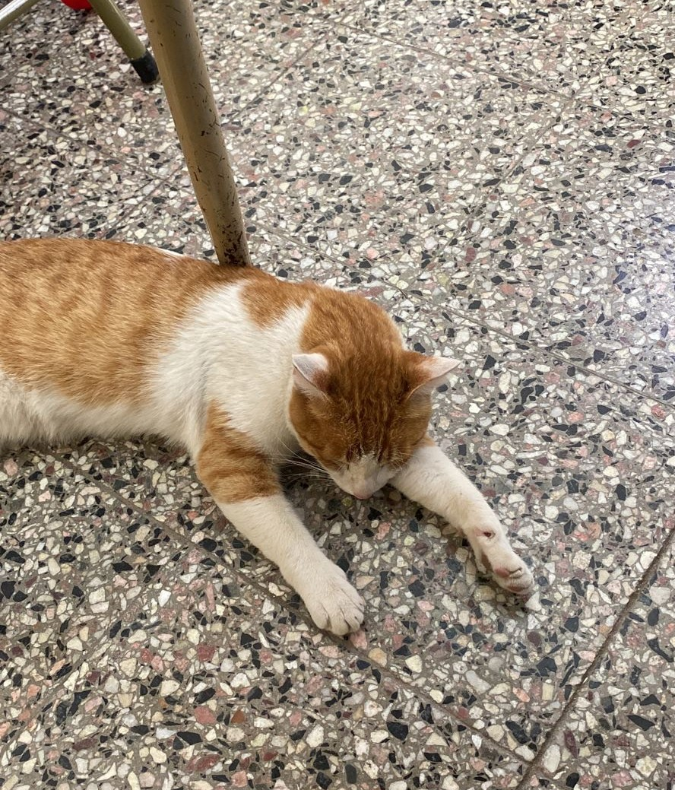

Un gato entra a una escuela y causa distracción en los alumnos
Un gato entra a una escuela y causa distracción en los alumnos. Aunque parezca algo normal es totalmente preocupante y debería tener una rápida resolución

Durante la última semana, un gato callejero sorprendió a los estudiantes de la Escuela Secundaria de Santa Teresa de Jesús al irrumpir en una de las aulas. Según los primeros alumnos que lo vieron, el felino apareció por una ventana abierta y comenzó a caminar por toda el aula mientras maullaba. Estos mismos, al ver al gato, automáticamente fueron distraídos y comenzaron a acercarse para jugar con él. La maestra intentó recuperar la atención de los estudiantes, pero el gato parecía tener una atracción magnética sobre ellos.
Los padres de los estudiantes fueron notificados del incidente y se les aseguró que se tomarían medidas para evitar futuras distracciones en el aula. Hasta el momento, no se sabe quién es el dueño del gato o cómo logró ingresar a la escuela. La directora ha prometido investigar el incidente y asegurarse de que no se vuelva a repetir.
Este incidente ha dejado a los estudiantes del Santa Teresa de Jesus con una anécdota inolvidable y ha demostrado que a veces las distracciones más inesperadas pueden ser las más divertidas.